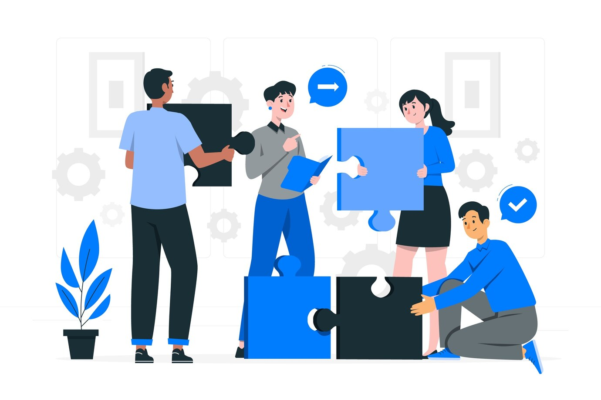

Des solutions techniques et un accompagnement expert avec BEAT
BEAT est un bureau d'expertise et d'accompagnement technique basé à Goma, au Nord-Kivu, en République Démocratique du Congo, dédié à offrir des solutions innovantes et un soutien spécialisé.
Découvrez nos services



Pourquoi choisir BEAT ?
Découvrez ce qui fait de nous le partenaire idéal pour vos projets techniques et innovants.
01
Expertise inégalée
Notre équipe d'experts certifiés vous apporte des solutions techniques précises et fiables, adaptées à vos besoins.
02
Innovation au cœur
Nous repoussons les limites de la technologie pour vous offrir des solutions modernes et disruptives.
03
Accompagnement sur mesure
De la conception à la réalisation, nous vous guidons à chaque étape pour garantir votre réussite.
04
Engagement local
Enracinés à Goma, nous comprenons les défis locaux et nous engageons à contribuer au développement de notre région.